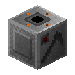

Overview
|  | The Auto Farming Machine is a machine that can harvest and replant vanilla crops. The block has the similar properties as an Block Of Iron. As of 0.3.0 you can now use upgrades to make the machine work faster. It is possible to havest on more then one level as of 0.3.0. |
Recipes
The machine can be crafted at a Crafting Table with the following recipe below.
Crafting Table
Upgrades & Yeilds
Upgrades can make the machine work faster and even increase the yield of the harvest. All upgrades from wooden to netherite can work with the farming machine since 0.3.0. You can apply the upgrade to "slot 0", depending on the tier of upgrade will change the speed and yield. If you have upgrades enabled there is a chance that you may gain a bit more crops based on the type of upgrade you use.
Upgrade Chart
| NAME | SPEED/TICKS | YEILD |
| None | 30 | +0 |
| Wooden | 25 | +0 |
| Stone | 20 | +1 |
| Iron | 15 | +1 |
| Gold | 10 | +2 |
| Diamond | 5 | +2 |
| Netherite | 1 | +3 |
Settings
| SETTING | VALUE |
| Renewable | Yes |
| Stackable | Yes (64) |
| Tool | Iron Pickaxe or better |
| Blast resistance | 6.0 |
| Hardness | 5.0 |
| Luminant | No |
| Transparent | No |
| Flammable | No |
| Tick rate | 1 |
| Map color | Metal |
| Inventory slots | 3 (Stack size 64) |
| Piston pushing | Blocked |
| Gravity | No |
| Drops | Self (1) |
| Material | Metal |
| Sound | Metal |
Harvesting
Having the following item in the seed slot will enable harvesting/planting that type of block. Most farming blocks are supported, however, not every kind is supported yet.
| ITEM | RETURN | BASE AMOUNT |
| Wheat Seeds | Wheat Seeds, Wheat | Seeds: 0-3, Crop: 1 |
| Beetroot Seeds | Beetroot Seeds, Beetroot | Seeds: 0-3, Crop: 1 |
| Carrot | Carrot | Seeds: 2-5 |
| Potato | Potato | Seeds: 2-5 |
| Sugar Cane | Sugar Cane | Seeds: 1 |
| Cocoa Beans | Cocoa Beans | Seeds: 3 |
| Melon Slice | Melon Slice | Seeds: 3-7 |
| Pumpkin | Pumpkin | Seeds: 1 |
| Bamboo | Bamboo | Seeds: 1 |
| Cactus | Cactus | Seeds: 1 |
| Kelp | Kelp | Seeds: 1 |
| Sweet Berries | Sweet Berries | Seeds: 2-3 |
| Nether Warts | Nether Warts | Seeds: 2-4 |
Tags
The item has some tags to allow for cross mod support.
Block / Item Tags
| NAMESPACE | TAG |
| nwtg_automation | machines/auto_farming |
| nwtg_automation | machines/auto_farming/off |
| nwtg_automation | machines/auto_farming/on |
Recipe Tags
| NAMESPACE | TAG |
| nwtg_automation | dispenser |
| nwtg_automation | machine_block |
| nwtg_automation | tools/hoes |
Releated Pages
Below are a list of related wiki pages.
Changes
Below are a list of changes made to the block.
- NWTG Automation 0.3.0
- Added support for multi-levels
- Added upgrade support
- Added new GUI slot icons
- Added new GUI progress icon
- Added new GUI status and process lights
- Changed recipe tags
- Changed block tags
- Improved some script